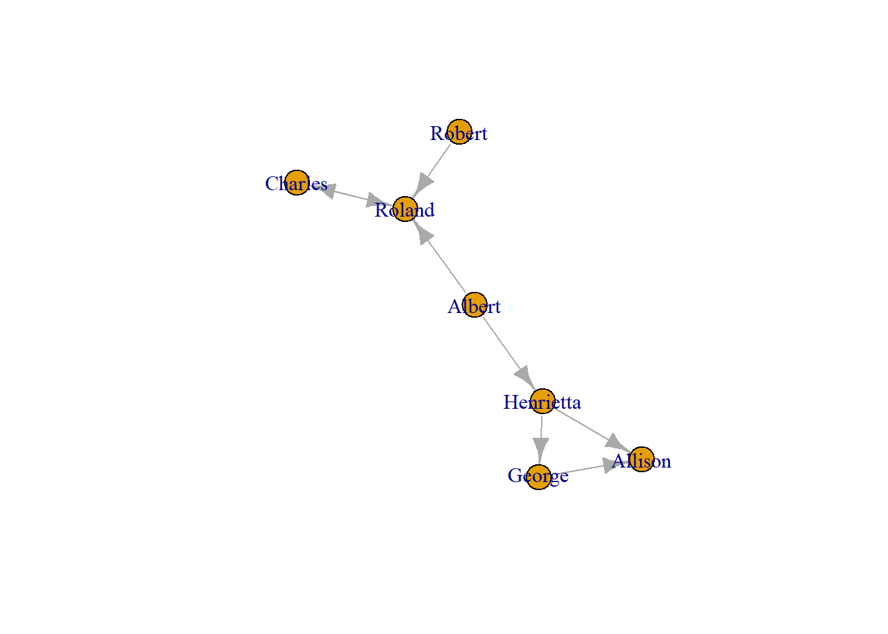
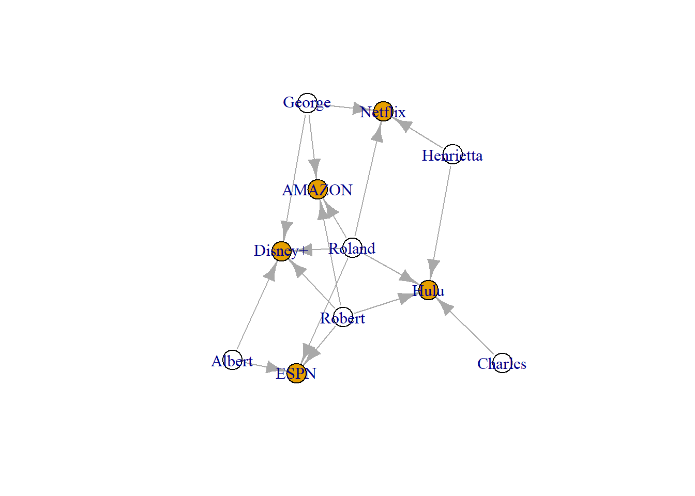
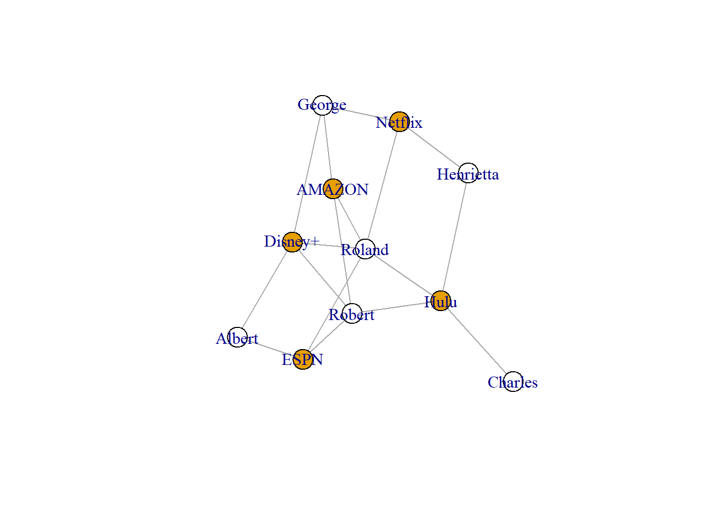

library(igraph)
Attaching package: 'igraph'The following objects are masked from 'package:stats':
decompose, spectrumThe following object is masked from 'package:base':
unionlibrary(igraph)
Attaching package: 'igraph'The following objects are masked from 'package:stats':
decompose, spectrumThe following object is masked from 'package:base':
unionWhat does it mean for a network to be ‘one mode?’ If you have a one mode network then your network consists of nodes that are of the same type connected to each other by some kind of tie. The ‘type’ or ‘mode’ of node refers to the unit of the node or what the node represents. Your network could represent people, countries, or organisations etc.. A one mode network, by definition, means that every node in your network of people are people. One mode network data are always stored as an edgelist or an adjacency matrix.
Network data may be stored as an edgelist. An edgelist is a very simple data structure that includes a list of relationships between the nodes in your network. An edgelist, at its most basic, has two columns, one for the sender and another for the receiver. If there is a connection between nodes in the network then they are listed in the columns. For example, A might say they are connected to B. If so, A would appear in the first column (the ‘From’ column) and B would appear in the second column (the ‘To’ column). Data in an edgelist are are stored, therefore, as pairs (known as dyads). R treats each dyad as reflecting a tie.
Follow the logic of the chunk below. In this chunk you create a vector called source with the names of those who are “sending” the connection. Then another called “Target” with the names of those who are “receiving” the connection. Note that the order of the names (the senders) in the object Source corresponds to the order of the names (the receivers). This is very important since this is supposed to represent the tie that exists between the individuals.
Looking at the chunk below, then you start in the left and read to the right. Robert (first name in the Source object) is connected to Roland (first name in the Target object) and so on. Notice that the names sometimes repeat? This is because they have more than one connection in the network.
Source <- c("Robert", "George", "Albert", "Albert", "Henrietta", "Henrietta", "Roland", "Charles")
Target <- c("Roland", "Allison", "Henrietta", "Roland", "George", "Allison", "Charles", "Roland")Now we have those two vectors made, we can construct an edgelist which is usually stored in a data frame. We use the data.frame() function to create a new object, edgelist, which compiles our network data into one table. One column, from, is made from our Source object. The other column, to, is made from the Target object.
edgelist <- data.frame(
from = Source,
to = Target)
print(edgelist) from to
1 Robert Roland
2 George Allison
3 Albert Henrietta
4 Albert Roland
5 Henrietta George
6 Henrietta Allison
7 Roland Charles
8 Charles RolandNow we can make a network out of this data frame using igraph’s graph_from_data_frame() function. Then, we can visualise it using the plot() function.
g <- graph_from_data_frame(edgelist)
set.seed(123) # helps R use the snae plot coordinates each time
plot(g)
Your first network!! Well done 😁
One final note about edgelists is that you might have more information about the edges than just who it is between. Let’s say you may have information about how frequently these individuals interact (5 times a week, once a week etc.), you can add a column to your edgelist reflecting that weight. You might also have categorical information about the edge (e.g. is the tie is ‘positive’ or ‘negative’). Again, you can add a column. If there is any information about the connections between the individuals, you can add them to your edgelist.
The second, perhaps less intuitive way, that network data are structured are as an adjacency matrix. Briefly put, a matrix is a two dimensional data set that is stored into rows and collumns. The rows (called i in network analysis) are the names of those who are “sending.” The columns (called j in network analysis) are the names of those receiving. In a one mode network, the names of individuals in the rows mirror the names of those in the columns.
So, we have the names of those in the network in the rows and the columns, but where do the ties come from? In each cell of the matrix (the coordinates of the matrix) you signal if there is a tie between the people row and column of that matrix associated with that cell. A ‘1’ indicates a tie and a ‘0’ indicates no tie.
To demonstrate what this looks like, let’s reconstruct the same network from above but from an adjacency matrix. To do this, you can use a function from the igraph package called as_adjacency_matrix() (yes there is also a as_edgelist() function) which will convert our existing network object into an adjacency matrix. Then we can take a look at it.
matrix <- as_adjacency_matrix(g, sparse = FALSE)
matrix Robert George Albert Henrietta Roland Charles Allison
Robert 0 0 0 0 1 0 0
George 0 0 0 0 0 0 1
Albert 0 0 0 1 1 0 0
Henrietta 0 1 0 0 0 0 1
Roland 0 0 0 0 0 1 0
Charles 0 0 0 0 1 0 0
Allison 0 0 0 0 0 0 0So, you will see the names of everyone in your network in both the rows and columns. Where there are ties between the people there are ones. Notice that there are coordinates in the matrix where the individual overlaps with themselves, this is called the ‘diagonal.’ For example, Robert and Robert. A ‘1’ in that cell would indicate that Robert is connected to themselves (known as a selfloop). More often than not, this should be a ‘0’ since self loops are usually meaningless.
Now, you can create a new network object (call it g2) using a slightly different function than before - graph_from_adjacency_matrix(). Note, if you pull data from a different source, say from a .csv, you need to ensure that R recognises it as a matrix. To do so, use as.matrix() before creating your network.
g2 <- graph_from_adjacency_matrix(matrix, diag = FALSE)
set.seed(123)
plot(g2)
Your second network!!!! 😁
Right, you have now created two networks! Well, the same network twice, but let’s gloss over that. The main thing you need to take away from this section is that networks can be created from an edgelist or an adjacency matrix. When collecting or using network data, make sure you know whether you are working with an edgelist or an adjacency matrix.
To convert an edgelist into a network object using igraph you use graph_from_data_frame(). Conversely, to convert an adjacency matrix use graph_from_adjacency_matrix().
What does it mean for a network to be ‘two mode?’ Well, you may have guess by now, however, in the spirit of being thorough, let’s dive in. If you have a two mode network then you have two different types of node connected to each other. For example, your network could be comprised of individuals connected to groups or words connected to documents. The important thing to know is that your two types of node must be absolutely distinct. In other words, let’s say you have individuals and groups, there must not be any cross over. Additionally, there must not be any cross over of ties. Individuals cannot be connected to other individuals nor groups to other groups.
Once again, two mode network data can be stored as an edgelist or an adjacency matrix. Let’s use the names of those in the previous networks, only this time, instead of being connected to each other, the ties reflect their TV subscriptions.
A two mode network stored as an edgelist is structured the same way as a one mode network. However, this time, one column (the ‘from’ column) has the individuals and the other (the ‘to’ column) has the groups.
individuals <- c("Robert", "Robert", "Robert", "Robert", "George", "George","George", "Albert", "Albert", "Henrietta", "Henrietta", "Roland", "Roland", "Roland", "Roland", "Roland", "Charles")
groups <- c("ESPN", "Hulu", "AMAZON", "Disney+", "Netflix", "AMAZON", "Disney+", "ESPN", "Disney+", "Hulu", "Netflix", "ESPN", "Hulu", "AMAZON", "Disney+", "Netflix", "Hulu")tm_edge <- data.frame(
i = individuals,
g = groups)
print(tm_edge) i g
1 Robert ESPN
2 Robert Hulu
3 Robert AMAZON
4 Robert Disney+
5 George Netflix
6 George AMAZON
7 George Disney+
8 Albert ESPN
9 Albert Disney+
10 Henrietta Hulu
11 Henrietta Netflix
12 Roland ESPN
13 Roland Hulu
14 Roland AMAZON
15 Roland Disney+
16 Roland Netflix
17 Charles HuluNow you have a two mode edgelist there are a few things we need to do. The first is familiar to you since you use the same function to create a two mode network as a one mode network from an edgelist. First, you use graph_from_data_frame() to create the network object g_tm. However, this object, as it is, appears as a one mode network. R needs to know that there are two types of node.
To do this, you can create a node characteristic to differentiate one from the other (individuals from groups). Igraph has a function that helps do this. bipartite_mapping() is a function that, in essence, searches your network and identifies one type (stored as FALSE or 0) and another type (stored as TRUE or 1). This is precisely why you must have distinct node types in each column. Otherwise igraph would not be able to recognise the individuals from the groups!
Finally, you use the vertex.color option to differentiate the individuals from the groups in your visualisation. Not to worry, more on that in CHAPTER X.
# Make the network object
g_tm <- graph_from_data_frame(tm_edge)
#Identify the two node types
V(g_tm)$type <- bipartite_mapping(g_tm)$type
# Visualise
set.seed(123)
plot(g_tm, vertex.color = V(g_tm)$type)
Two Mode adjacency matrices are a little bit different from one more adjacency matrices. A two mode matrix (also known as an incidence, affiliation, or bipartite matrix) has rows for the individuals (i) and columns for the groups (g). The cells are still filled with ‘1’ and ‘0’ to indicate an individual is connected to a group. For obvious reasons, there is not a diagonal on this type of matrix since the rows and columns are distinct. No overlap means no self loops.
You can convert the two mode network you have been working on into a matrix using igraph’s as_biadjacency_matrix() function. Then you can view it. It is as you expect. Robert and gang are in the rows and each column is filled with the TV subscriptions from the original network.
tm_matrix <- as_biadjacency_matrix(g_tm, sparse = FALSE)
tm_matrix ESPN Hulu AMAZON Disney+ Netflix
Robert 1 1 1 1 0
George 0 0 1 1 1
Albert 1 0 0 1 0
Henrietta 0 1 0 0 1
Roland 1 1 1 1 1
Charles 0 1 0 0 0Now this is ready to be converted into a network object. You do so using graph_from_biadjacency_matrix() from igraph. Since a matrix obviously has two types of mode (the rows and columns are different), igraph can easily create a two mode network from these data. So there is no need to using the mapping that you use before.
g_tm2 <- graph_from_biadjacency_matrix(tm_matrix)
set.seed(123)
plot(g_tm2, vertex.color = V(g_tm2)$type)
So, network data (both one or two mode) are stored as either an edgelist or an adjacency matrix. However, do all network data start that way? The short answer is no, they don’t. The long answer is fleshed out in CHAPTER X where you will learn more about network data collection. However, suffice it to say that you might need to think outside the box when you are working with network-based research. You may have survey data, observational data, or even time-diary data that you are working with. Eventually, you will need to clean your data in such a way that they end up in either of these two formats. How you get there is beyond this handbook. However, be mindful, that whatever process you use does not inadvertently cause you missing data (i.e. you leave people or ties out during your cleaning process).
A second thing to be mindful of is that network data, especially social network data, are quite personal. This introduces ethical issues and validity issues for any study you are performing even if you are using secondary data. The ethical issue is that you must be mindful that these data are inherently relational and therefore present risk of reputation to the respondent. Where possible pseudonyms or identification is absolutely advisable! Additionally, consider he context of your data. If your network reflects friendship or trust among workmates, people may feel pressured to say they all trust the boss. Further, to appear popular, they might overestimate how connected they are. While this isn’t a huge issue - one’s perception of how well connected they are is still very useful - it is something for you to consider and perhaps address as a potential limitation of your data.
The boundary of your data is imperative to understand………………………………………
What do you do with individuals who don’t have any ties? We call those isolates. This is a decision you need to make. If they are a legitimate participant in the network, you may want to include them still, but how do they appear in your edgelist.